IMPLEMENTACIÓN Y CONFIGURACIÓN DE SERVICIOS SSH, DHCP, HTTP, DNS Y FTP EN UN SERVIDOR
En este laboratorio se implementara una red, donde esta conectado un computador con Windows 10 y un servidor Ubuntu server 22.04.4 LTS, y se implementara los servicios de SSH, DHCP, HTTP, DNS, FTP.
Pasos previos
Los pasos previos que se deben de realizar, se van a trabajar en el software de virtualización de VirtualBox, que es un sistema de virtualización gratuito y que nos facilita muchas cosas a la hora de empezar a administrar maquinas virtuales.
Instalación de Ubuntu Server
Para la implementación de este laboratorio debes de tener instalado una maquina de Ubuntu server LTC, con su respectiva versión, en este caso vamos a trabajar con una versión de Ubuntu 24.04.4 LTC, puedes ver la instalación en el siguiente link de instalación de Ubuntu Server.
Instalación de Windows
Para este laboratorio no es necesario tener un versión de Windows requerida, lo puedes hacer con la que desees, ya que solo hará de cliente para probar las respectivas funcionalidades configuradas en el Servidor.
Configuración de la topología de red
Para realizar este laboratorio se tendrá una red aislada para conectar los diferentes equipos, simulando una red de conexión entre los equipos, esto nos ayuda a tener un laboratorio mas controlado y lograr hacer lo que se propone en la siguiente grafica.
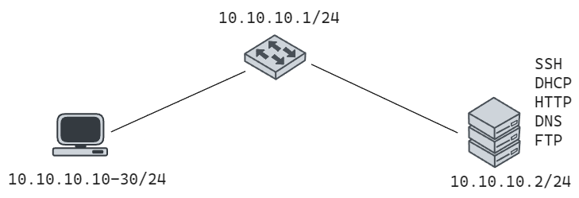
Configuración de VirtualBox
1. Crear una nueva red aislada
Seguimos los siguientes pasos para crear la nueva red, elegimos tools y después en una network manager donde vamos a poder administrar las redes con virtual box.
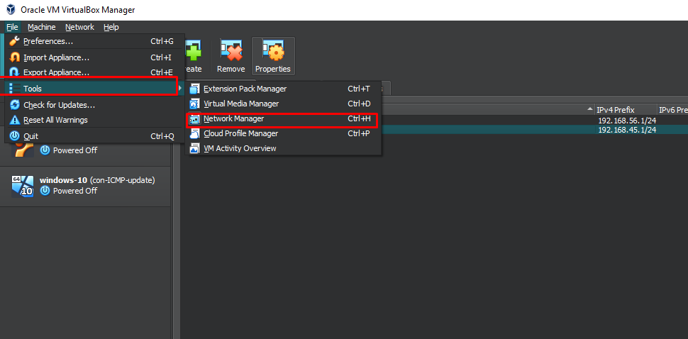
Y elegimos una red Host-only Networks.
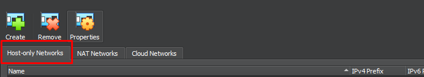
2. Para crear una nueva red
Para crear la nueva red, le damos en el botón create y aceptamos los permisos necesario para proceder a crear la red.
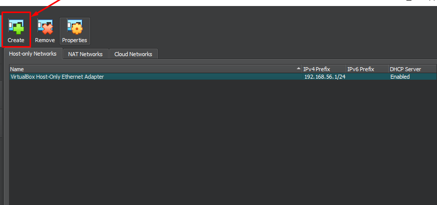
3. Configuración de dirección de red
Procedemos a configurar la dirección de red que va a tener esta nueva red, en este caso no nos deja elegir una red, a partir de 1, con lo cual configuramos la dirección de red 10.10.10.1.
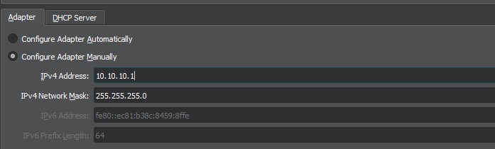
Y dejamos la configuración de DHCP que nos facilita VirtualBox como deshabilitada, ya que posteriormente la vamos a configurar con el servidor de Ubuntu.
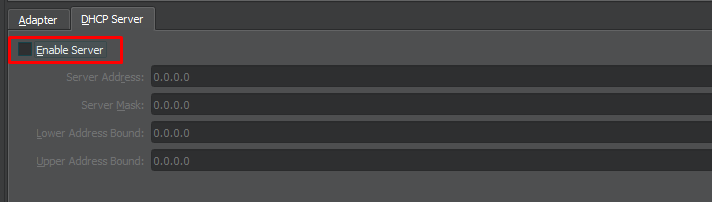
Configuración de dos interfaces de red para Ubuntu Server y Windows 10
Administración de Redes en Ubuntu Server
Vamos a configurar dos interfaces de res al servidor de Ubuntu server para mayor facilidad de trabajo, ya que va a tener una interfaz de red para conectarse a internet y otra para conectarse a la red interna creada. Vamos a ingresar a la parte de red de la maquina y configuramos dos adaptadores.
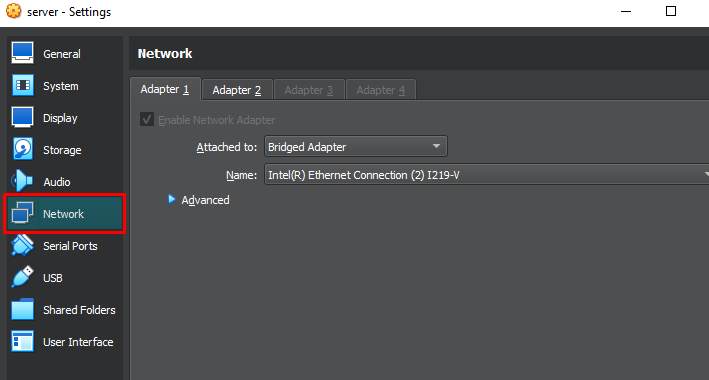
Y debemos de configurar el primer adaptador como se muestra en la imagen, donde este tendrá acceso desde la maquina principal y con acceso a la red.
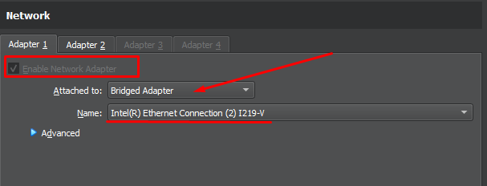
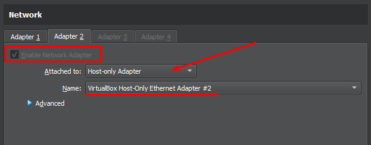
Administración de Red Windows 10
Para configurar la red en Windows 10, solo debe habilitar una red, la cual será la conexión con el servidor Ubuntu, que proveerá los servicios a configurar.
Y el cual esta conectado a la red interna que se configuro anteriormente.
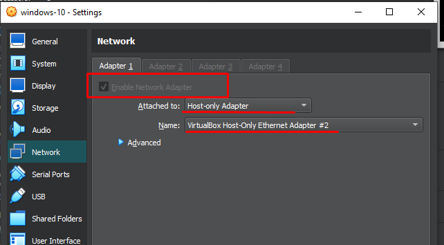
Conexión con MobaXterm a Servidor
Esta configuración se realiza para facilitar el trabajo, ya que utilizaremos una conexión ssh para ejecutar comandos desde la máquina principal, conectándonos a través de un servidor de conexión remota, como puede ser PUTTY, MobaXterm, Solar-PuTTY, OPENSSH, CMD, entre muchas otras herramientas que nos facilitan el trabajo.
Esta configuración la realizaremos desde MobaXterm, que es mi herramienta de trabajo, cuando ya ingresemos a la maquina de Ubuntu Server, vamos el siguiente comando para conocer su dirección de IP para conexión remota y las interfaces de red disponibles para este servidor.
# Comando completo
main@main-server:~$ ip addres
# Comando con su abreviatura
main@main-server:~$ ip a
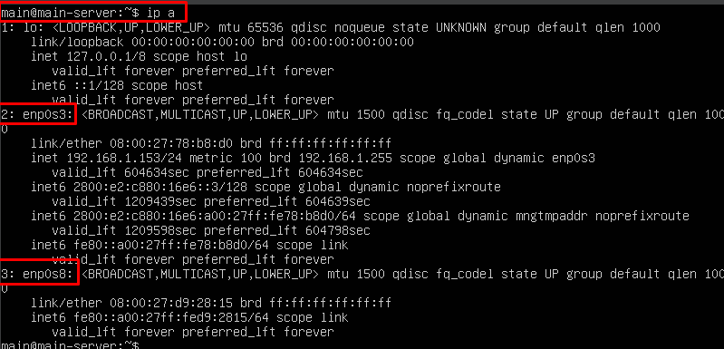
Observamos que sus interfaces de red configuradas anteriormente con el gestor de red de VirtualBox son la enp0s3 y enp0s8, la cual la interfaz de red 2 y la IP 192.168.1.153, nos ofrece la dirección de red para conexión remota con ssh. Este protocolo de conexión viene al momento de instalar Ubuntu Server, se se siguió los pasos respectivos previos, ya tienes ssh en el servidor, y si no lo tienes revisa el paso posterior donde se va a instalar SSH y debes primero realizar esa configuración de instalación, para realizar este paso.
Conexión con MobaXterm
Realizamos una nueva sesión de conexión.
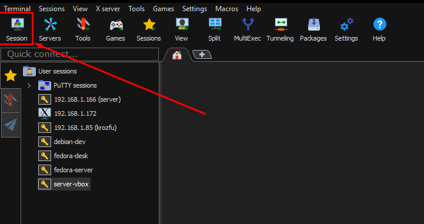
Y accedemos por medio de SSH y configuramos la IP y el nombre de usuario configurado anteriormente, para este caso mi dirección IP es 192.168.1.153 y mi usuario main.
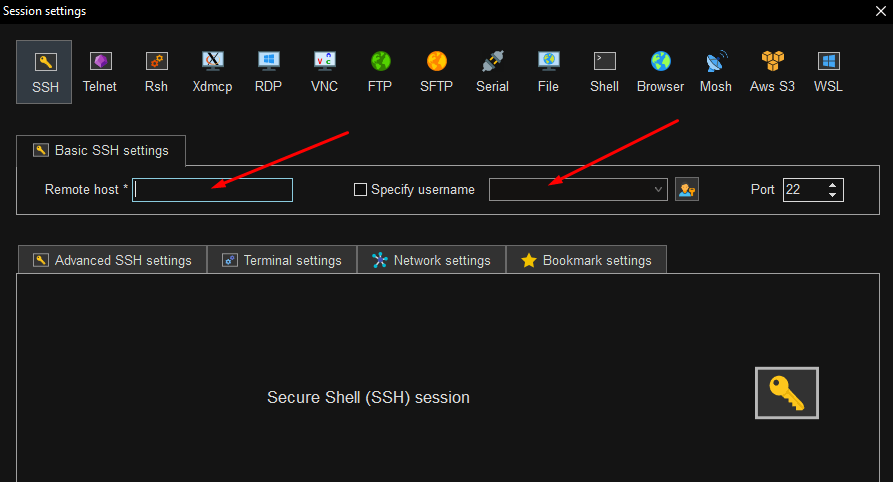
Una vez ingresado los parámetros te pedirá la contraseña y lograras acceder al servidor.
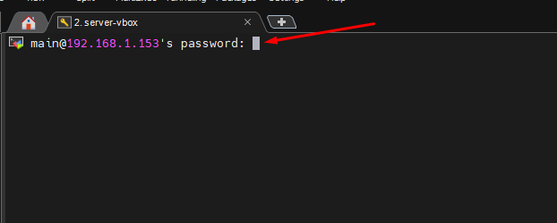
Una vez ingresado ya puedes realizar las configuraciones mas fácilmente.
Crear un servidor con Ubuntu Server
0. Configuración de IP estática para interfaz de red Servidor
Vamos a configurar la IP de servidor Ubuntu de la interfaz de red aislada para realizar conexión con la maquina de Windows 10.
Para ingresar a la configuración debemos de editar el siguiente archivo con el siguiente comando, en este caso vamos a utilizar el editor de código vim, puedes utilizar otro editor código de línea de comandos como nano.
Y configuramos la el archivo yaml de la siguiente forma.
Lugo de configurar la IP estática guardamos los cambios con wq(este comando solo sirve para vim) y aplicamos los cambios con el siguiente comando.
Y ya podemos observar que tenemos configurada la IP de esta nueva interfaz de red.

1. Configuración de SSH
Vamos a configurar el servidor SSH para poder tener desde otra maquina, con el protocolo para compartir y tener conexión con otro dispositivo de manera segura. Comprobamos si el servicio de SSH esta corriendo en el sistema, utilizando el siguiente comando.
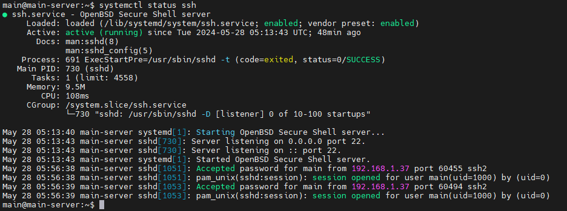
Se puede comprobar que el servicio esta corriendo y que esta activado, si no esta instalado debes de ejecutar el siguiente comando y comprobar su estado.
2. Configuración de DHCP
Luego de haber configurado la dirección IP estática para el servidor Ubuntu, vamos a proceder a instalar el servicio de DHCP, para que preste el servicio a otras maquinas la prestación de una IP en el rango de IPs.
Para instalar el servicio de DHCP isc-dhcp-server, ejecutamos el siguiente comando.
Luego de instalar el servicio de DHCP, entramos a configurar el archivo de configuración dhcpd.conf, donde vamos se va a agregar las configuraciones de red adecuadas para la asignación de la red en DHCP.
# DHCP PARA LA RED
group red-interna {
subnet 10.10.10.0 netmask 255.255.255.0 {
range 10.10.10.10 10.10.10.30;
default-lease-time 3600;
max-lease-time 86400;
option domain-name-servers 10.10.10.2;
option domain-name "redes.local";
option subnet-mask 255.255.255.0;
option routers 10.10.10.1;
option broadcast-address 10.10.10.255;
}
}
Y se agrega la configuración al final del archivo.
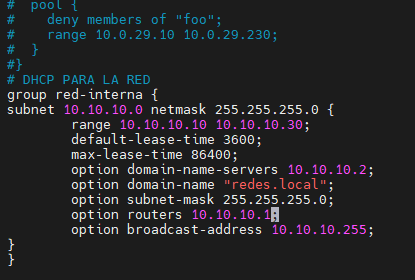
Y verificamos si la configuración esta correctamente configurada.
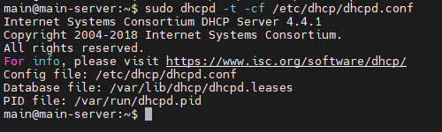
Procedemos a configurar la interfaz de red del servidor DHCP.
Y se modifica la siguiente línea en el archivo dependiendo del nombre de la interfaz de red que tenga, para nuestro caso es la enp0s3, como se muestra a continuación.
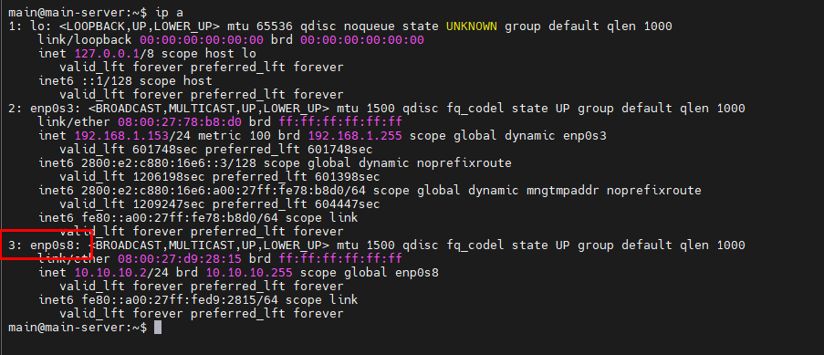
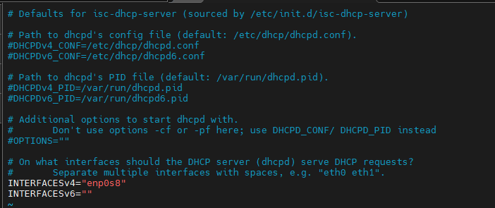
Finalmente procedemos a reiniciar el servicio DHCP y revisamos el estados si está activo, ejecutamos las dos primeras líneas en la terminal por separado.
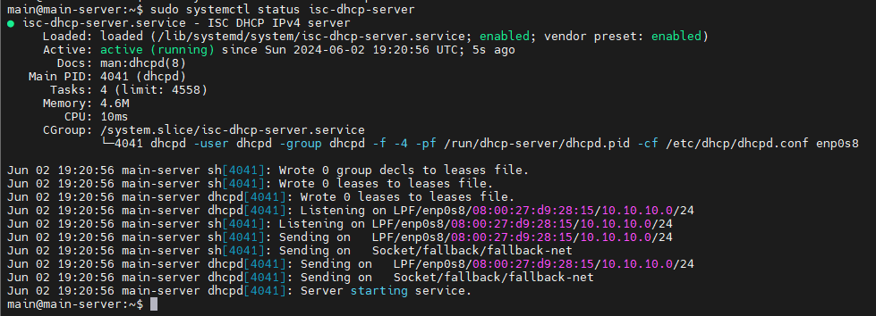
Verificamos la IP en el sistema cliente de Windows 10
Podemos comprobar ingresando al símbolo del sistema de Windows 10, y ingresar el siguiente comando para comprobar la configuración de DHCP.
Como se puede observar, en las configuraciones de red, ya el servidor DHCP, nos dio la IP 10.10.10.20 y con puerta de enlace 10.10.10.1, las que fueron configuradas en el servidor de Ubuntu.
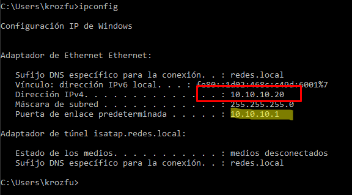
3. Configuración de FTP
Para el servidor FTP, vamos instalar el siguiente servicio vsftpd en el servidor de Ubuntu Server.
Luego de instalar el servicio para ftp, se realiza la modificación de un archivo del sistema, para poder realizar la conexión con el sistema.
La siguiente línea comentada debe descomentarse para activar el traspaso de archivos.
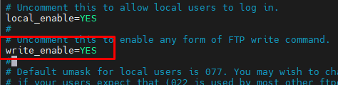
Procede a reiniciar el servicio de ftp, con la ejecución de la siguientes líneas por separado.
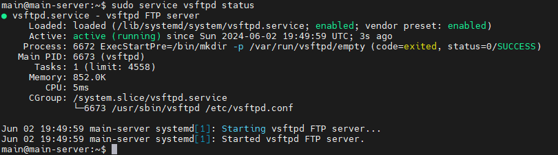
Comprobar el servicio ftp desde windows
Para probar si el servicio de ftp esta corriendo perfectamente lo vamos a hacer a través de una herramienta llamada WinSCP.
Configuramos los parámetros para realizar la conexión con la dirección IP del servidor y el usuario respectivo y la contraseña.
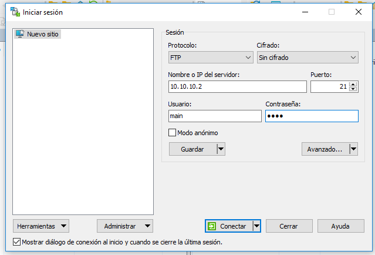
Al finalizar ya tenemos la conexión respectiva, y podemos compartir archivos entre la maquina cliente y el servidor.
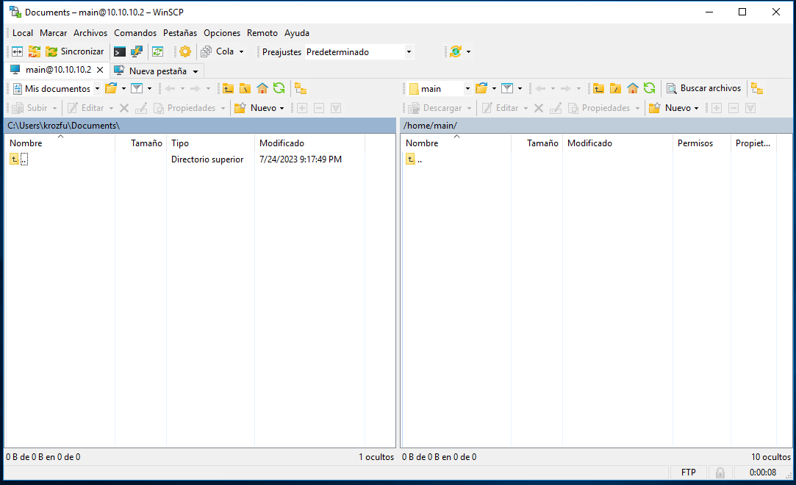
4. Configuración de DNS
Instalar DNS con BIND9
Verificamos el estatus de bind9 para ver si todo esta funcionando bien.
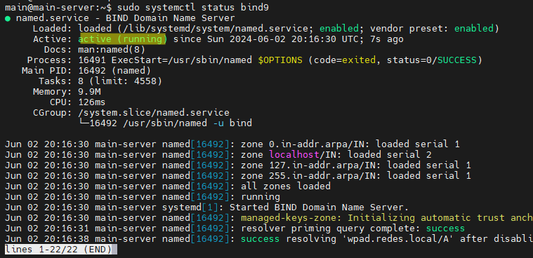
Permitir de forma sencilla en el Firewall local, el acceso al puerto y protocolo que utiliza Bind9
Configuración mínima de Bind9
Líneas a modificar, agregar o eliminar (el archivo debe contener lo siguiente),y si estan la lineas dnssec-validation auto; y listen-on-v6 { any; }; se deben de comentar en el archivo.
listen-on { any; };
allow-query { localhost; 10.10.10.0/24; };
forwarders {
8.8.8.8;
8.8.4.4;
};
#dnssec-validation auto;
dnssec-validation no;
#listen-on-v6 { any; };
El archivo debe de quedar con las siguientes configuraciones.
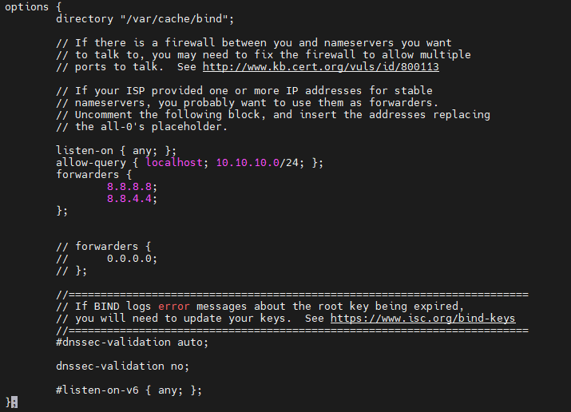
Obligar el uso único de IPv4, modificando el siguiente archivo, y modificando la siguiente línea OPTIONS="-u bind -4".
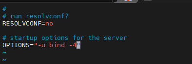
Comprobar la configuración de Bind9 y reiniciar el servicio si todo está bien, luego lanzar status para ver si no hay errores.
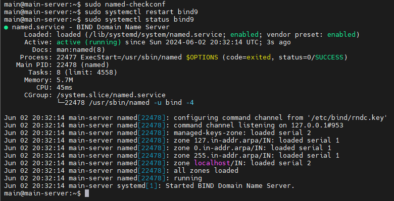
Agregamos las zonas
Modificamos el siguiente archivo, creando las respectivas Zonas, tanto directa como inversa.
zone "networld.cu" IN {
type master;
file "/etc/bind/zonas/db.networld.cu";
};
zone "10.10.10.in-addr.arpa" {
type master;
file "/etc/bind/zonas/db.10.10.10";
};
Creando el directorio donde guardaremos los archivos de zonas y luego creamos las dos zonas, la directa y la inversa.
Y creamos el siguiente archivo con la siguiente modificación
$TTL 1D
@ IN SOA ns1.networld.cu. admin.networld.cu. (
1 ; Serial
12h ; Refresh
15m ; Retry
3w ; Expire
2h ) ; Negative Cache TTL
; Registros NS
IN NS ns1.networld.cu.
ns1 IN A 10.10.10.2
www IN A 10.10.10.2
Y creamos el siguiente archivo
$TTL 1d ;
@ IN SOA ns1.networld.cu admin.networld.cu. (
20210222 ; Serial
12h ; Refresh
15m ; Retry
3w ; Expire
2h ) ; Negative Cache TTL
;
@ IN NS ns1.networld.cu.
1 IN PTR www.networld.cu.
Comprobar los archivos de zona que acabamos de crear para ver si todo está bien.
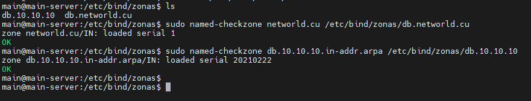
Reiniciamos nuevamente
Comprobar funcionamiento desde el host cliente.
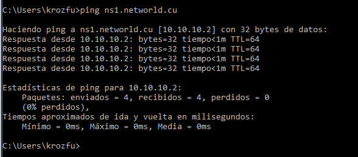
5. Configuración de HTTP
Para la instalación del servicio HTTP, se va a utilizar Apache de Ubuntu, con lo cual para los pasos para instalar son muestran a continuación.
El siguiente comando es para instalar apache2.
Para iniciar el servicio de apache se ejecuta el siguiente comando.
Para habilitar el servicio de apache2 ejecutamos el siguiente comando.
Finalmente se comprueba si esta corriendo el servicio de apache.
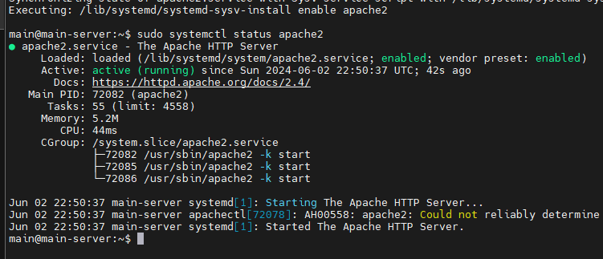
Luego para probar el servicio de HTTP y de DNS entramos desde la maquina cliente y probamos la URL www.networld.cu.
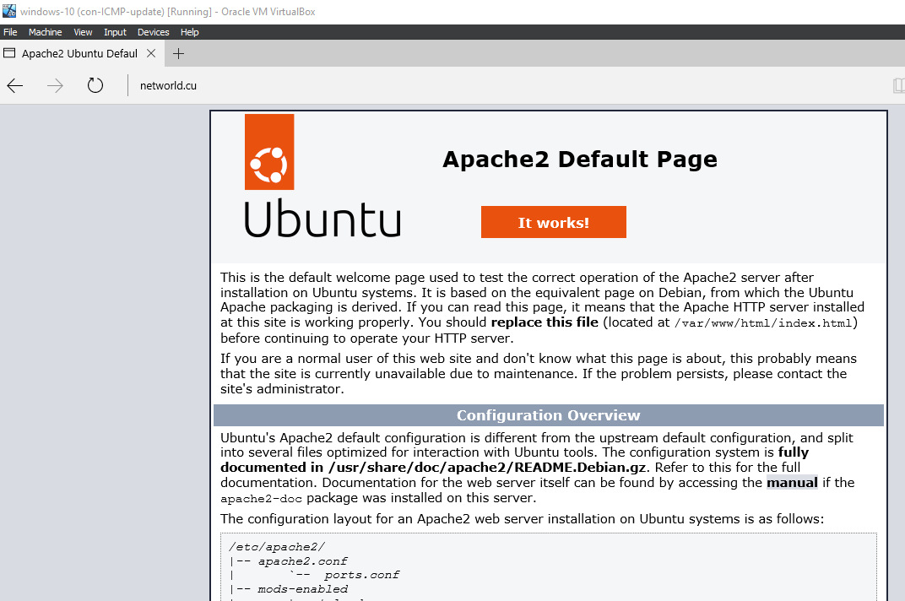